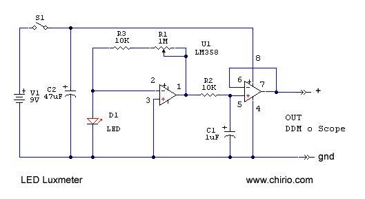
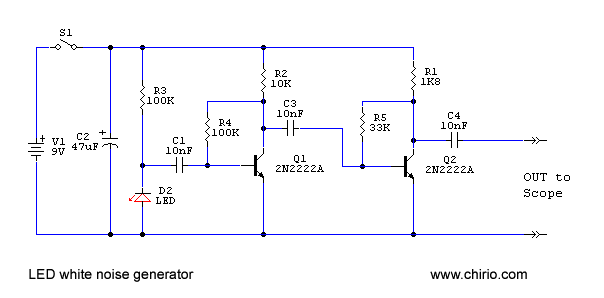
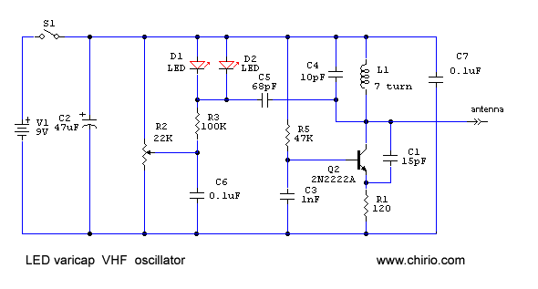
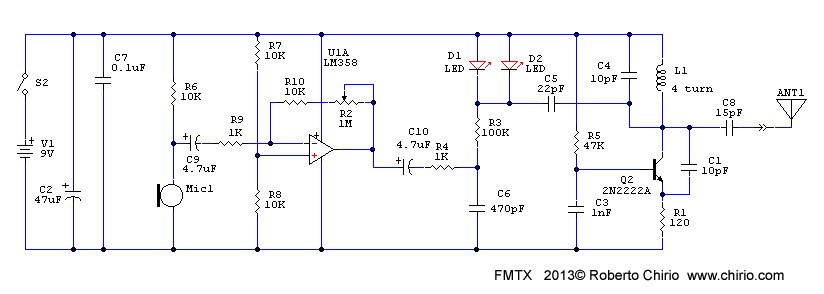

LED & lighting
LED
How to use an LED differently "Electronic design" by R.Chirio
Page index
Premise
February 2010
The LED diode is still a semiconductor and there are ways to use it differently than its main function of providing light....
LED as photodiode or photodiode

All LED diodes, in addition to emitting light, are also sensitive to light. They will not be as sensitive as photodiodes, or phototransistors, specifically designed for this purpose with enlarged surfaces, but also with LED diodes it is possible to read an electrical signal proportional to the light intensity.
A common 5mm clear red LED was used.
Connected directly to a multimeter or oscilloscope input it is already possible to read a signal in mV depending on the light source where it is directed.
If you want to have a sensitive signal even with very little light, implement the proposed circuit, where the LED signal in mV is amplified by the circuit with LM358 operational amplifier, the first stage is a variable-gain amplifier. With the trimmer you can vary the amplification of the LED signal, adapting it that is to the light intensity you want to measure.
The low-pass filter composed of R2 and C1 reduces noise and softens the signal. The final stage is a follower to match impedance and provide a conditioned signal on the output even with low impedances.
Connect the output to a Digital Voltmeter on the 2V or 20V range as we could have 7-8V pp amplitude in case of strong light intensity; with an oscilloscope we can verify the intensity and amplitude of the signal.
Waveform read directly on the terminals of a RED 5mm LED positioned 1m from a traditional 36W neon tube at 50 Hz .
We thus read a good signal that corresponds to the waveform of the light emitted by the tube.
In the case of low consumption electronic neon tubes, the 50 Hz pulse will be modulated by a frequency of 20-40kHz.
{kind=link}
All LEDs when struck by light give a signal, even power LEDs; clearly white LEDs will have a lower signal since they are optically filtered to give white emission. Try LEDs of various colors and also ultraviolet and infrared ones. Generally they present greater sensitivity towards the wavelength for which they were designed. So that using an LED for UV it is possible to read light with emission in the UV band.
LED as white noise generator

Description
A reverse-biased LED is used, making it work with minimal reverse current, very weak, but sufficient to generate broadband electronic noise. (White noise)
Of course such a signal can also be obtained from a normal diode or Zener diode or even from a reverse-biased BJT junction. Here we want to demonstrate a different application of LEDs and therefore a white 5mm LED was used.
The signal is amplified by two wideband 2N2222A stages, so as to have at the output a signal of 2.5Vpp clearly visible on the oscilloscope.
This signal can be used to test BF amplifiers and also AF stages in the HF band.
The pk-pk signal value must be divided by 10 as the 10X probe was used.
{kind=link}
RF oscillator at variable frequency (LED like a varicap)

This is a simple Colpitts oscillator designed to oscillate at approximately 100 MHz, by modifying the tuning capacitance it is possible to have a frequency shift of approximately 10 MHz.
The usual 0.5W RF transistor type 2N2222A or BC547 with fT 300 MHz is always used
To change the oscillation frequency, one generally uses a variable capacitor or a small trimmer, but by using the junction capacitance of an LED it's possible to obtain a capacitance variation; simply by polarizing the LED junction with variable voltage, at 0V you get maximum capacitance, increasing the applied voltage decreases the capacitance.
|
Capacitance detected on common 5mm LEDs |
|
|---|---|
|
Blue |
130pF |
|
White |
93pF |
|
Green |
56pF |
|
Red |
22pF |
In this application two red leds of 5mm were used, the capacitance on this led varies from 10 to 22pF two leds were used in parallel to have about 40pF.
By rotating trimmer R2 it is possible to have a frequency range from about 100 MHz to 110 MHz.
By adding a microphone and an audio preamplifier to this schematic, it's possible to build a sensitive and stable FM spy radio microphone, meaning listenable with a common frequency modulation radio. It's necessary to add a tuned circuit to connect an antenna cable.
Obviously, using Varicap or Varactor diodes, we obtain better and more linear and greater regulation, but this is the LED page.....
It is noted that despite being traversed by very weak current the LEDs tend to light up slightly, due to the direct effect of the radiated radiofrequency.
{kind=link}
This is the circuit of the oscillator made on a stripboard. You can see the two Leds used as Varicap. On the left the trimmer to vary the frequency.
{kind=link}
This is the waveform detected between the collector of Q2 and ground. It is necessary to use an RF probe with low capacitance.
Minimum frequency 99.4 MHz maximum 111.9 MHz
FM radio microphone (LED as a varicap)

Connecting a microphone to the previous Colpitts oscillator creates an excellent wireless microphone to use on the FM band.
The usual 0.5W RF transistor type 2N2222A or BC547 with fT 300 MHz is always used
To change the oscillation frequency, you can put a 15pF capacitor in place of C4, or even just by spacing or reducing the spacing between the turns we obtain tuning across almost the entire FM band.
Using the two red LEDs gives a good modulation of +/- 75 kHz necessary for good FMW audio, but it is important to provide an audio signal of at least 2.5V RMS for this adjust the trimmer R2 to have the maximum modulation amplitude.
For narrow FM modulation (+/-3 kHz) just remove one of the LEDs and lower the audio signal until reception is good, without distortion.
The microphone must be a Condenser type with good sensitivity.
The RF circuit is about 10mW sufficient to radiate a good RF signal for 10-30m, to increase the range connect 75cm of cable to the antenna output.
If instead of the microphone we put the white noise generator circuit and amplify to maximum, we create an effective Jammer capable of sweeping across the entire FM frequency, jamming the whole range with noise and interference.
It is noted that despite being traversed by very weak current the LEDs tend to light up slightly, due to the direct effect of the radiated radiofrequency.
© Roberto Chirio: all rights reserved.